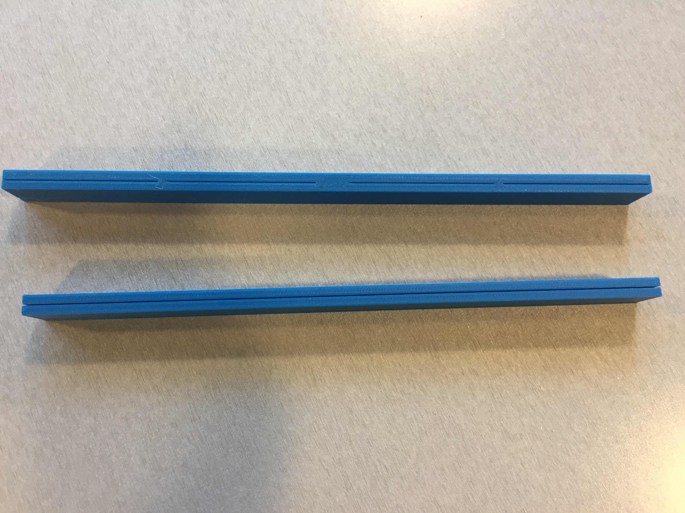
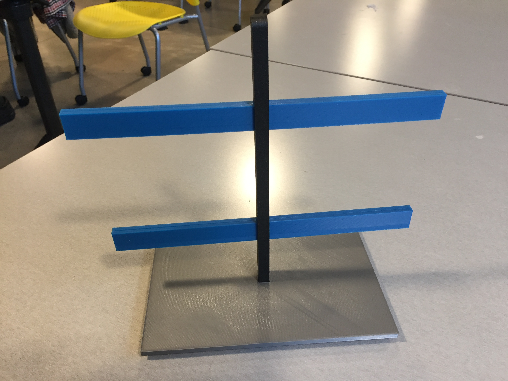
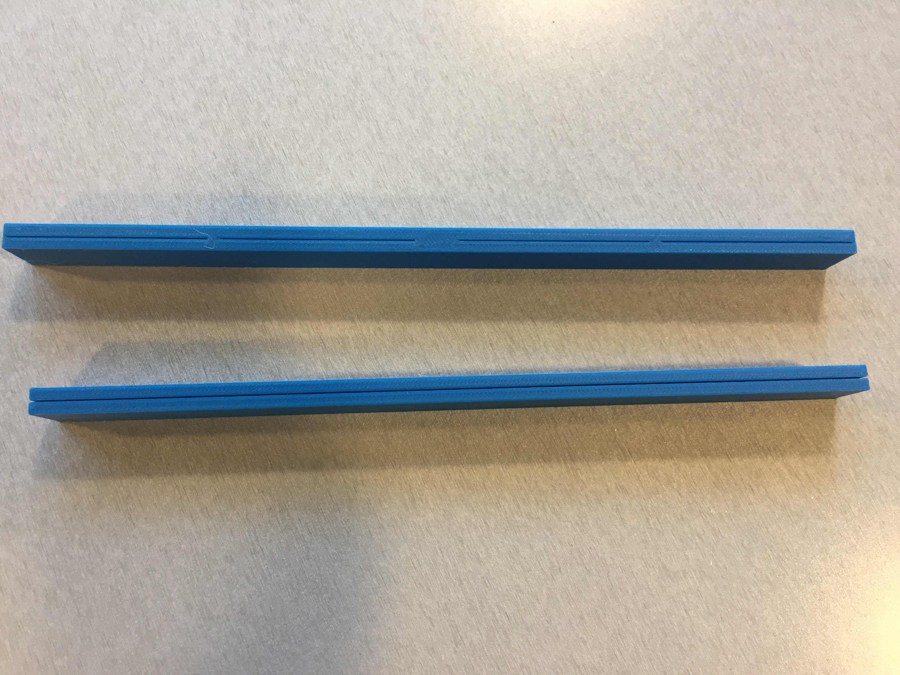
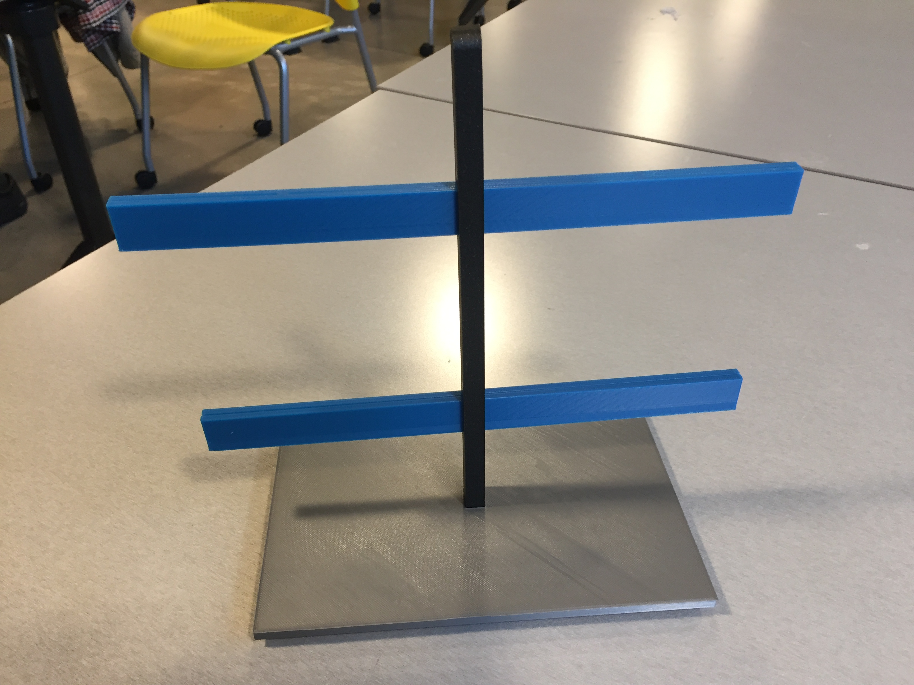

Concept
The polaroid photo stand and storage box is exactly what it sounds like. It is a one piece unit where you can display your polaroid photos and store the rest in the storage box. This idea was inspired by a huge stack of polaroids I have in my desk drawer. I specifically have Fujifilm Instax polaroids. The one unit would consist of a box, a pole that sits on the lid, and rods that go through the pole. The box design will have finger joints, so the box can easily fit together. The lid will have a semi-closed slot where the pole will sit. The pole will have two holes where each rod will go through. The rods have slots for the polaroid photos. This idea can be utilized as a home decor item. So if you have polaroid photos and want a way to display them, you can consider this option!
 


